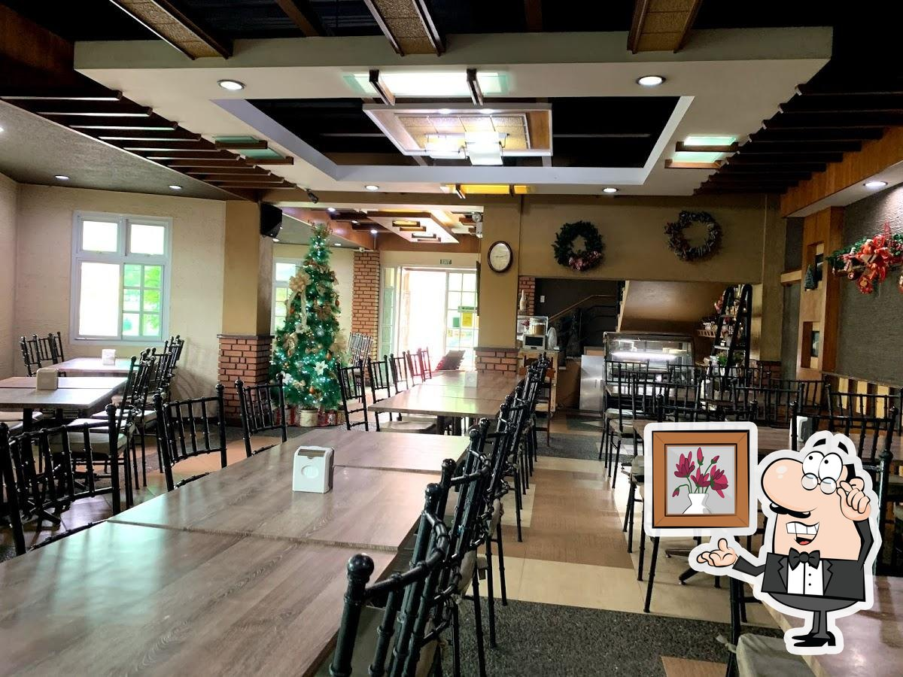
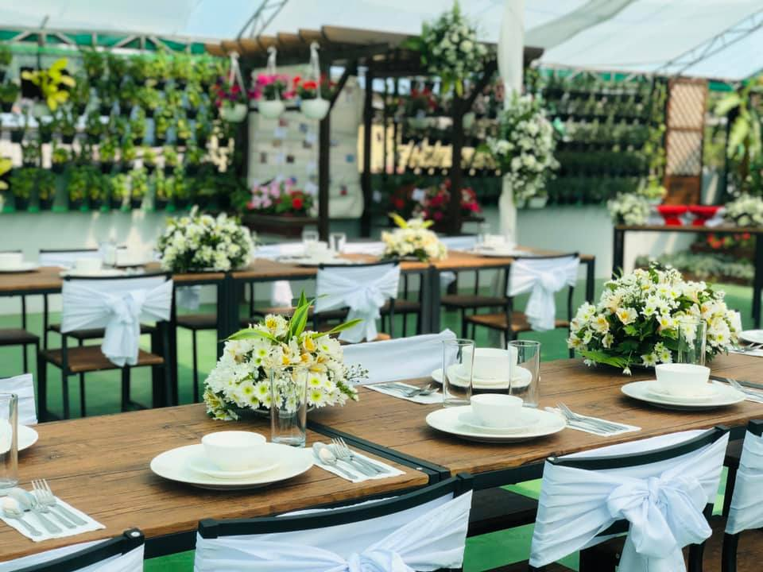

Dive into a seafood paradise at Dampa Express, where the ocean's bounty takes center stage. Immerse yourself in the vibrant maritime atmosphere as you feast on freshly caught delights prepared with culinary expertise, ensuring each dish at this seaside gem is a flavorful journey worth savoring.

Dampa Express
Calajo Restaurant
Inglay Restaurant & Bakeshop